지금 조수는 기능은 다 있는데 보이지 않는다. 무엇을 하고 있는지, 무엇을 바꿨는지, 어디를 눌러야 하는지가 화면에 없다. 이 제안은 정보 구조를 새로 짜는 것이 아니라 이미 있는 기능을 하나의 표면에 제대로 앉히는 것이다. 아래 「지금」 사진은 전부 이 브랜치에서 실측한 것이고(1440×900, 표준 모드, 시장 마을), 「제안」 사진은 같은 배경 위에 HTML/CSS 로 그린 목업이다.
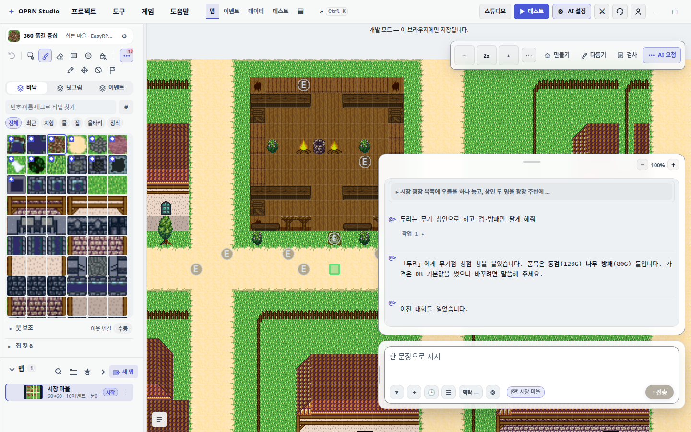
@>, 우상단에 − 100% + 줌 스테퍼.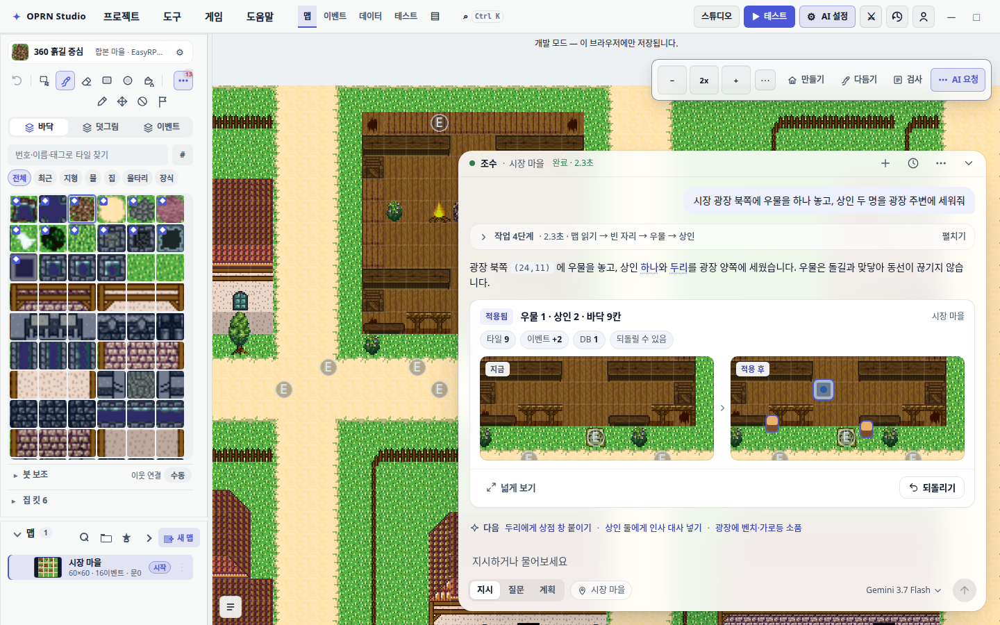
aiChatPanel.ts 한 파일 + 위성 모듈 11개 3,499줄스크린샷은 scripts/capture-ai-assistant-current.mjs 로 재현한다(포트만 바꾸면 된다). 번호는 아래 목록과 같다.
작업 1 ▸ 한 줄.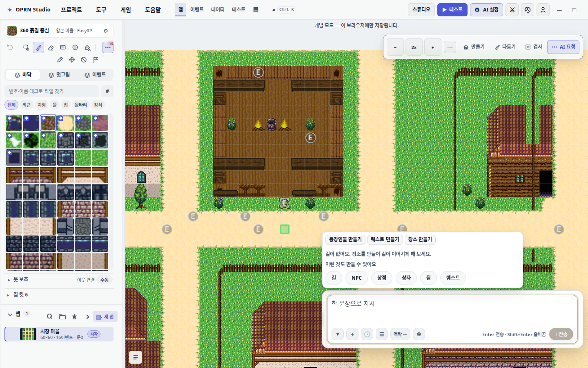
738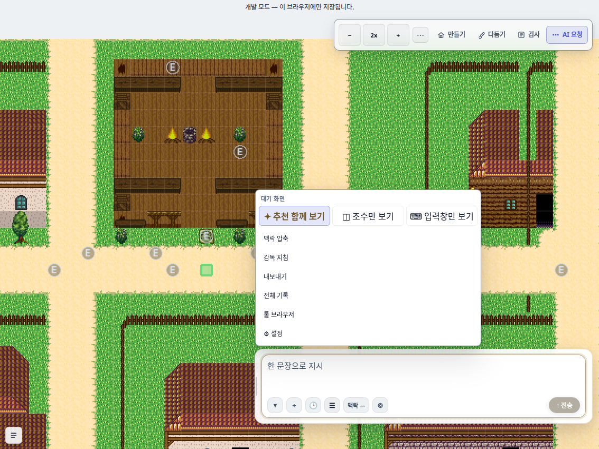
9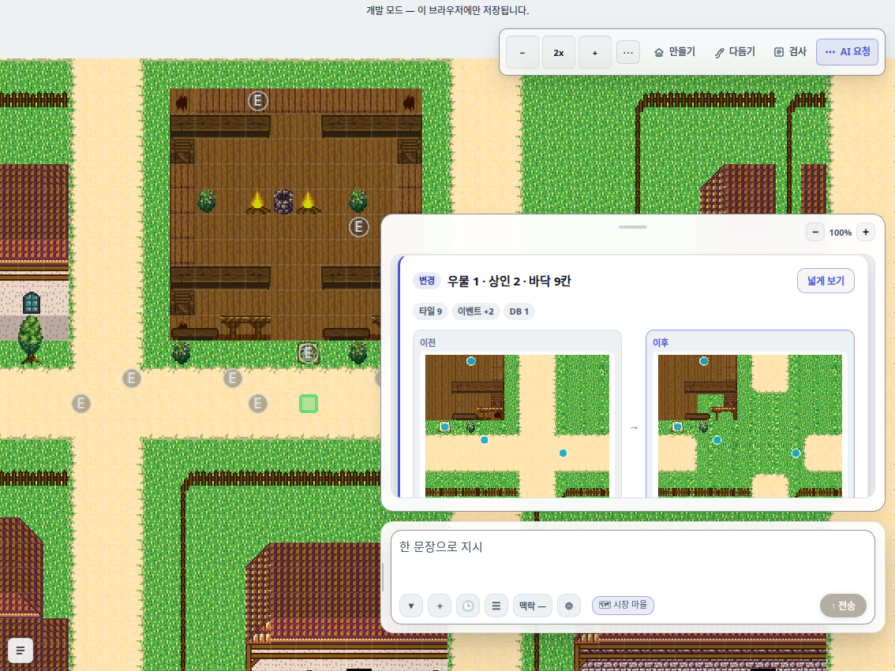
10--font-mono. DESIGN.md 는 「RM 스타일 @> 명령 로그」를 이미 폐기 방향으로 적었지만 표면은 그대로다. 한국어 모노는 가독성이 가장 나쁜 조합이다.− 100% + 기록 줌 스테퍼와 드래그 핸들이 기록 카드 상단을 점유한다. 대화 UI 에 줌은 일반적 기대가 아니다.작업 1 ▸ 로 접히고, 펼쳐도 함수 이름(place_npc)이다. 진행 중에는 캡슐에 아무 변화가 없다(하단 「시뮬레이션」 참고).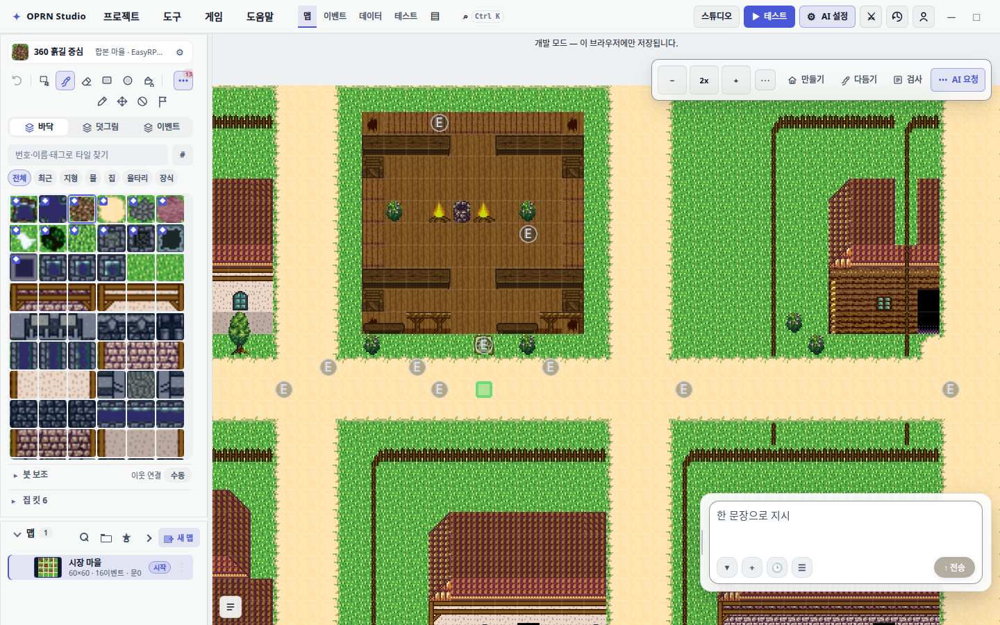
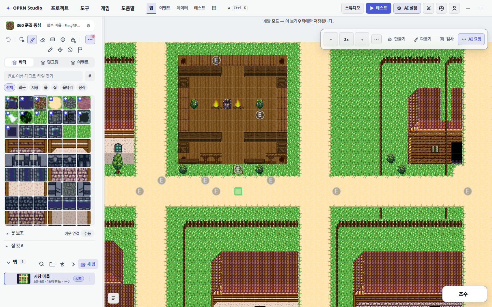
is-turn-running 에만 켜진다).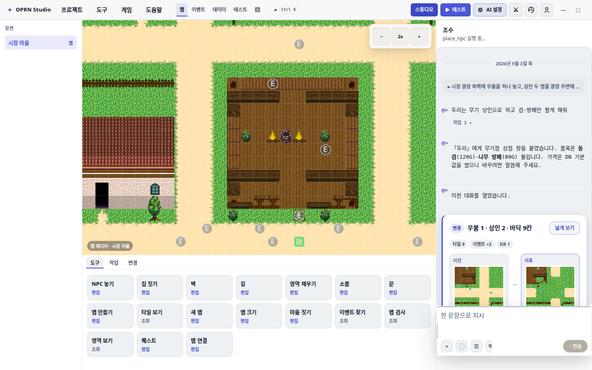
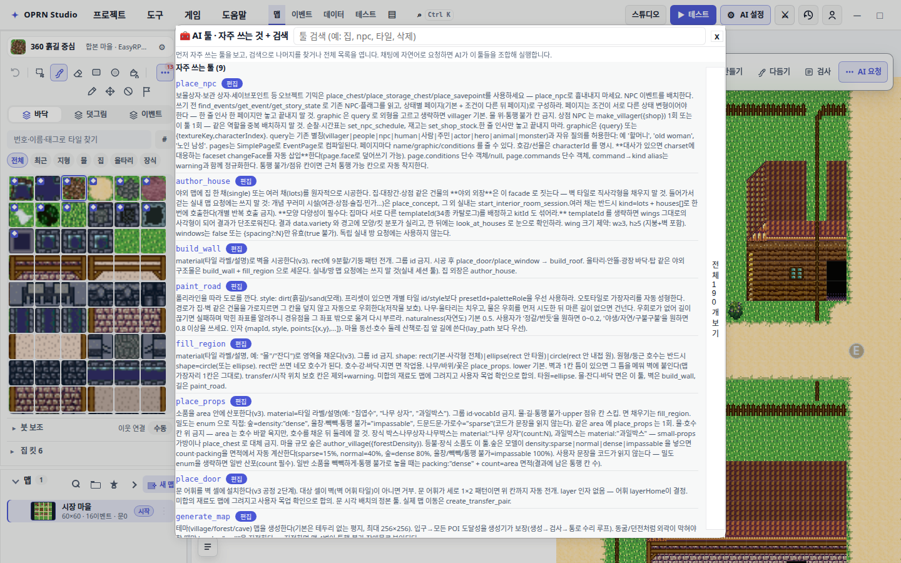
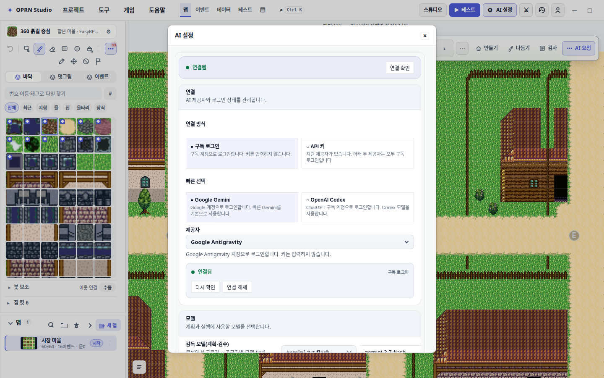
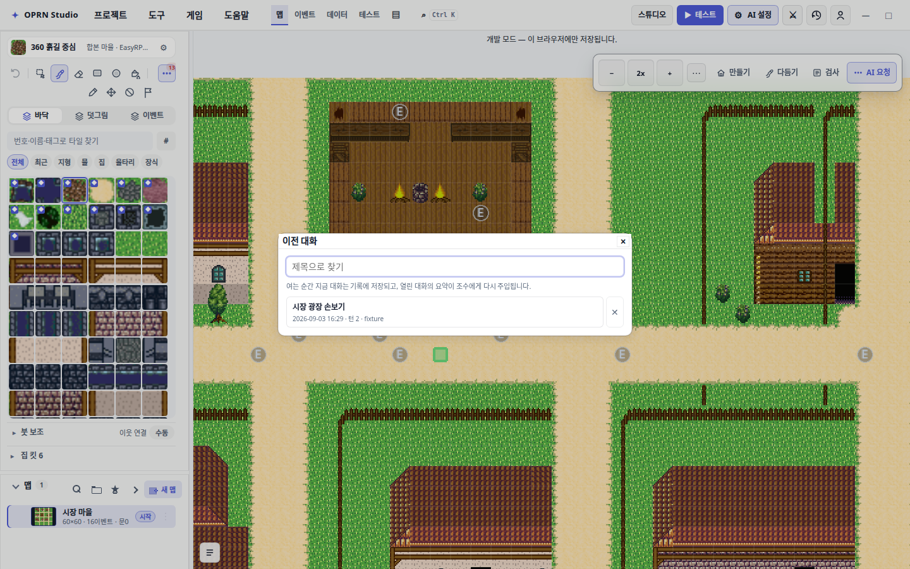
19-turn-running-sim.png)은 실제 LLM 없이 is-turn-running 클래스만 붙인 시뮬레이션이다. 결과는 완료 상태와 픽셀 단위로 같았다 — 상태 글자(ai-status)가 is-assistant-idle 에서 숨겨지기 때문이다. 실제 턴에서는 액션 행 오른쪽에 작은 상태 글자가 나온다. 「진행 중 표시가 약하다」는 사실이고 「없다」는 과장이다.| 원인 | 근거 | 제안에서의 처리 |
|---|---|---|
| CSS 적층 | src/styles/database/tabs-b-assistant-panel/ 17파일 4,799줄. 13(modern)·14(ux-repair)·15(readable)·16(modern-change-first)·17(modern-shell)이 같은 선택자를 덮는다. !important 24, hex 20종. 2026-08-28 「유리면은 이름만 유리」 사고가 이 구조에서 났다. | 데크 CSS 한 파일이 표면의 단일 소유자. 13~17 삭제, 01~12 는 라이브 클래스 게이트로 죽은 규칙 제거. |
| 기능 삭제의 잔상 | 도크 3종·헤더·얼굴·스킬·완료 밴드가 차례로 삭제됐지만(위키 「패널 셸」 절) 남은 요소들은 그 시절 자리에 그대로다 — 줌 스테퍼, 「대기 화면」 3분기, 글리프 열. | 남는 기능을 새 자리에 다시 배치. 삭제가 아니라 재배치(기능 손실 0 을 표로 증명, 5절). |
| 상태를 그리는 층이 없다 | 턴 상태는 setStatus() 텍스트 하나. 진행·확인 필요·완료·오류가 같은 12px 회색 글자다. 접힌 알약은 점 하나. | 상태 레일(점 + 문장 + 진행 헤어라인) + 접힘 알약 3상태 + 작업 타임라인. |
대화·작업·결과·입력이 같은 유리판 위에 있다. 팝오버는 데크에 6px 붙어서 뜨고 닫히면 hidden(투명 전면 레이어 금지 — 2026-08-19 히트테스트 P0 규칙 유지).
모든 공간 작업 행에 맵 칩(해당 좌표 46×32 크롭 + 핀)이 붙고, 결과는 「지금 / 적용 후」 영수증으로 남는다. 이 두 가지가 이 제품만의 서명이다.
place_npc → 「상인 배치」, find_open_area → 「빈 자리 찾기」. 아이콘은 Lucide 계열 stroke 1.75 SVG 한 세트(이모지·기호 글리프 0).
유휴·진행·확인 필요·완료·오류 다섯 상태가 점 색 + 문장 + (진행 시) 상단 2px 헤어라인으로 구분된다. 접힌 알약도 같은 다섯 상태를 든다.
testid 계약과 진입점 전부 보존. 자리만 바뀐다. 「진입점은 여러 곳에 둬도 된다」(좌측 사이드바 교훈) — 되돌리기는 영수증 카드와 ⋯ 메뉴 두 곳.
얼굴 없음 · 도크 하나(float) · 캔버스 우선 · 유리 알파 ≥ .78(제안 .90) · saturate ≤ 1.08 · 유리 위 보조 글자는 --text-2. 유일한 재검토 요청은 38px 상태 레일(7절 D1).
| 안 | 무엇 | 장점 | 단점 | 판정 |
|---|---|---|---|---|
| A. 데크 추천 | 지금의 「캡슐이 위로 자란다」 모델을 유지하되 표면을 하나로 합치고 상태·작업·영수증 층을 넣는다. | 캔버스 계약(도크 삭제 결정) 그대로. 기존 TS 구조(패널 + 컴포저 + 로그 마운트) 위에 얹힌다. 좁은 폭(1280)에서도 640px 로 동작. | 긴 대화에서는 세로 공간이 부족해 스크롤이 잦다(최신이 아래, 위 페이드). | 채택 |
| B. 우측 레일 도크 | Cursor·Windsurf 식 360px 고정 우측 열. | 대화가 길어도 안정. IDE 사용자에게 익숙. | 2026-08-31 에 실측 근거(캔버스 46% 잠식)로 삭제된 축을 되살린다. 계약 3배 문제 재발. | 기각 |
| C. 스튜디오 우선 | AI 스튜디오(장면 콘솔)를 기본 AI 표면으로, 캡슐은 런처로. | 연출·장면 작업엔 가장 넓다. | 「타일 한 줄 고치기」 같은 짧은 지시에 화면 전환이 든다. 두 표면·두 정신 모델. | P3 에서 데크 부품으로 재도장만 |
모든 목업은 docs/…-assets/mock/deck.html 하나에서 #state 로 렌더한다(scripts/capture-ai-assistant-mock.mjs). 배경은 실제 편집기 스크린샷이고 데크만 새로 그린 것이다.
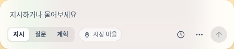
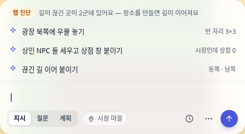
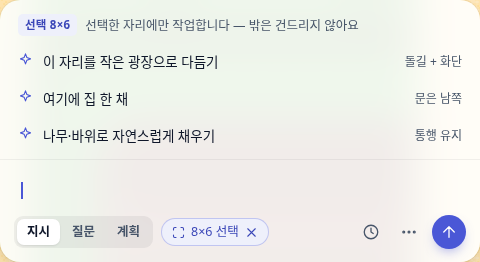
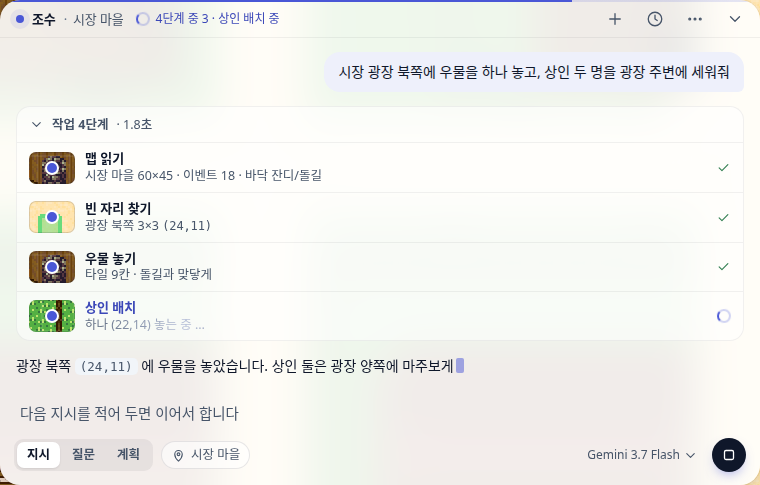
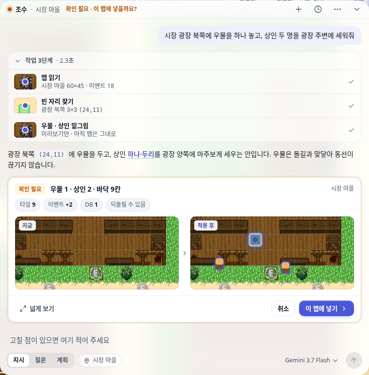
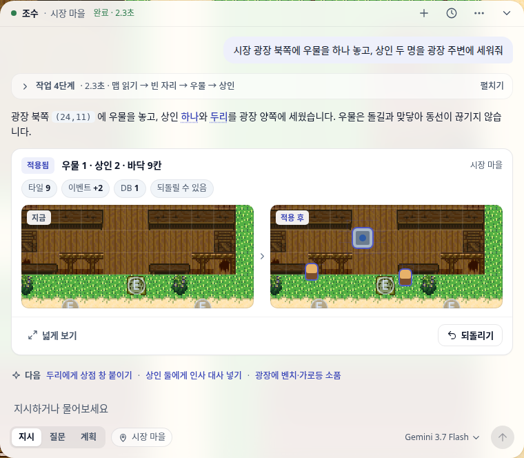
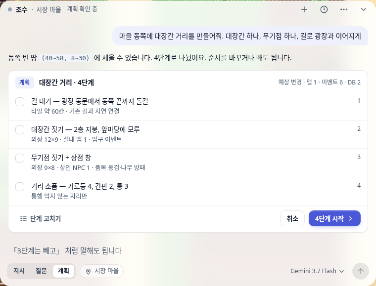
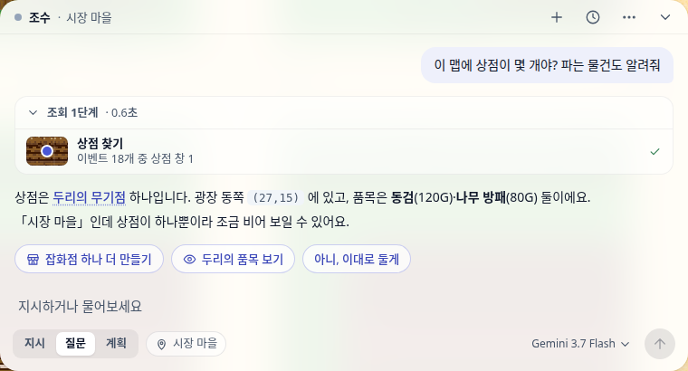
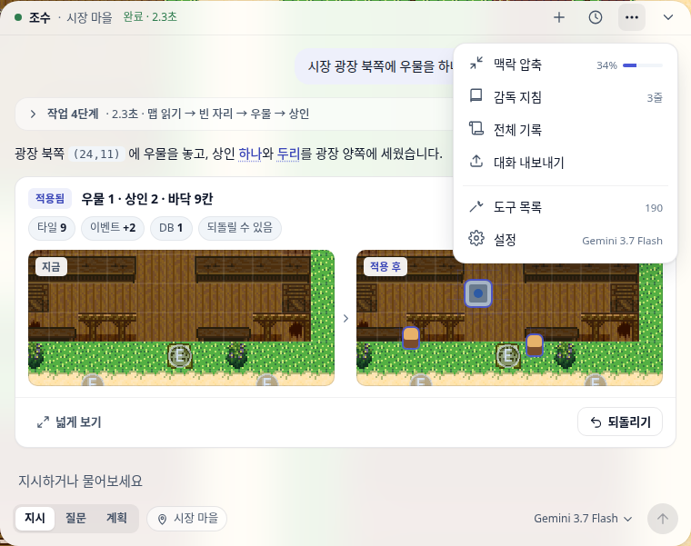
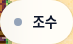
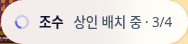
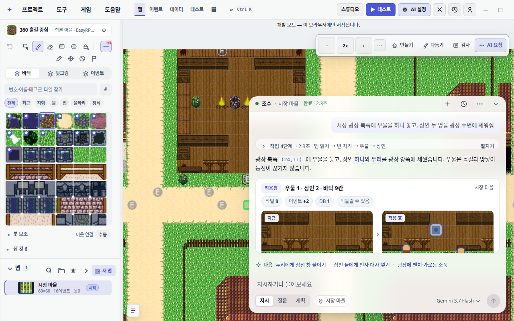
max-height 를 뷰포트에 맞추고 위쪽을 페이드로 잘라 최신이 아래에 붙는다. 캔버스 상단 크롬은 가려지지 않는다.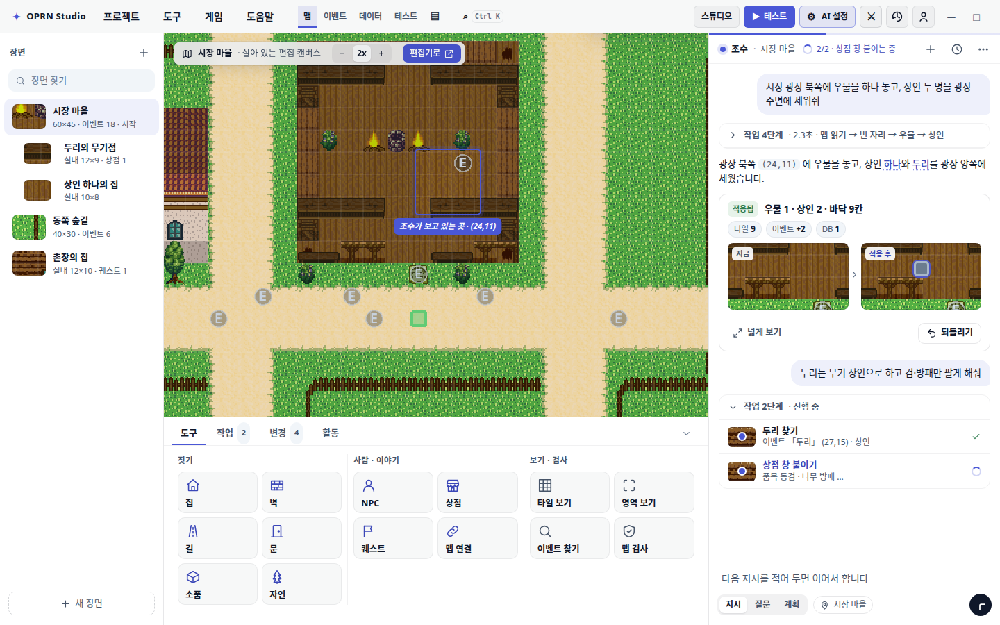
편집기 셸 토큰(src/styles/tokens.css)을 그대로 쓴다. 새로 도입하는 값은 상태 색 셋과 유리·그림자 둘뿐이다.
#4A57D6 진행 · 주 버튼 · 선택(기존 --accent)#EEF0FB 사용자 말풍선 · 배지 바탕#B45309 확인 필요 · 승인 대기 (신규)#2F7D4F 완료 · 적용됨 (신규)#B42318 오류 · 파괴적 (기존 --danger 계열)rgba(255,255,255,.90) + blur 20 · saturate 1.08. 하한 .78 위| 이름 | 값 | 쓰는 곳 |
|---|---|---|
--deck-radius | 20px | 데크 · 알약(999) |
--card-radius | 14px | 영수증 · 계획 · 작업 그룹 · 메뉴 |
--ctl-radius | 10px | 버튼 · 아이콘 버튼(8) |
--shadow-deck | 0 28px 64px -28px rgba(15,23,42,.38), 0 2px 8px rgba(15,23,42,.06), 0 0 0 1px rgba(15,23,42,.06) | 데크 · 알약. 테두리 대신 1px 링을 그림자로 |
--shadow-pop | 0 12px 32px -12px rgba(15,23,42,.30), 0 1px 3px rgba(15,23,42,.08) | ⋯ 메뉴 · 팝오버 |
--deck-w / --deck-compact-w | 760 / 480 (1280 폭에서 640 / 480) | 기존 --ai-float-bar-width(640) · --ai-float-compact-width(420) 승계 |
(24,11) 에 우물을 놓고, 상인 하나와 두리를 세웠습니다.사용자·조수 발화. 산세리프. 좌표만 모노 12.5.--text-2(#475569). --text-3 는 불투명 카드 안에서만.이벤트 편집기의 renderEditorIcon(.ee-icon) 과 같은 house spec(stroke 1.75~1.8, currentColor). 데크 스코프에서 크기만 다시 준다 — 스튜디오에서 이미 밟은 함정.
칩은 툴 결과의 좌표/영역에서 캔버스 크롭을 얻는다(변경 카드가 이미 before/after 캔버스를 그리는 aiChangePreview.ts 경로 재사용). 좌표가 없는 조회 툴은 아이콘 칩. 클릭하면 그 자리로 카메라 이동(navigateToEditorReference).
changePreviewChips, before/after 캔버스, undo)다. 새로운 것은 ⑥의 바뀐 칸 강조와 카드가 데크 폭을 다 쓰는 것(썸네일 183 → 340px).| 대상 | 무엇 | 시간·이징 | reduced-motion |
|---|---|---|---|
| 데크 폭·높이 | compact ↔ open 은 transform/opacity 로만(레이아웃 속성 애니메이션 금지 — DESIGN.md 6절) | 180ms ease-in-out | 즉시 |
| 새 행(발화·작업) | opacity 0→1 + translateY 4px→0 | 120ms ease-out | opacity 만 |
| 진행 헤어라인 | 인디고 40% 구간이 좌→우로 흐름 | 1.4s linear 반복 | 정지된 100% 바 |
| 레일 점(진행) | 링 3→6px 펄스 | 1.2s ease-in-out 반복 | 정지 |
| 시머 텍스트 | 진행 행 요약만 | 1.6s | 일반 텍스트 |
| 규칙 | 내용 | 지금과의 관계 |
|---|---|---|
| 데크 기하 | 유휴 = 컴포저만(480). 포커스·대화·턴 = 760(1280 폭에서 640). 대화 영역은 max-height: min(660px, 62vh), 넘치면 안에서 스크롤하고 위쪽 44px 페이드. 폭 리사이즈 핸들은 왼쪽 가장자리 하나(기록 높이 핸들·줌 스테퍼 삭제). | --ai-float-compact-width/--ai-float-bar-width 승계. oprn:ai-log-height·ai-log-zoom 폐기. |
| 모드 | 지시(기본) · 질문 · 계획 세그먼트. 질문은 편집 툴을 막고 조회만, 계획은 실행 전 계획 카드를 강제. 세그먼트는 agentMode·plannerSkipReason 에 힌트로 전달되고, 의도 선언(LLM)이 최종 판정. | DESIGN.md 「Composer modes are 지시 / 질문 / 계획」 이 실제 표면에 없던 것을 채운다. |
| 보내기 / 멈추기 | Enter 보내기, Shift+Enter 줄바꿈(힌트 글자 삭제, 툴팁으로). 턴 중 같은 자리 버튼이 ■ 멈추기(Esc). 턴 중 입력은 대기 큐 — 입력창 플레이스홀더가 그 사실을 말한다. | ai-send·ai-abort·ai-pending-queue testid 유지. |
| 작업 타임라인 | 툴 호출은 그룹 하나(「작업 N단계 · 시간」). 진행 중 그룹은 펼침, 완료 그룹은 접힘(요약: 라벨 → 라벨 → …). 행 = 맵 칩 · 한국어 라벨 · 요약 · 상태. 행 클릭 = 그 좌표로 카메라. 함수명은 툴팁에. | ai-tool-activity-toggle 유지. 라벨 사전은 스튜디오 도구 카드의 한국어 이름 재사용. |
| 승인 흐름 | 승인이 필요한 제안은 영수증 카드(확인 필요) + 레일 앰버 + 알약 배지. 「이 맵에 넣기」 / 「취소」. 적용 뒤 같은 카드가 「적용됨」 으로 바뀌고 「되돌리기」 가 남는다. 되돌리기는 카드와 ⋯ 메뉴(전체 기록) 두 곳. | aiProposalCard.ts + aiChangePreview.ts 병합. 「이 맵에 넣기」 어휘 유지. |
| 제안(추천) | 빈 입력 + 포커스에서 데크 안에 최대 3행. 출처 = 맵 진단(끊긴 길·상점 0 등) + 감독 프롬프트 칩. 각 행은 실행 가능한 문장 + 근거. 단어 칩 폐기. | ai-suggest-popover·ai-next-steps 내용을 재구성. 팝오버 분리 상자 삭제. |
| 답변 속 이름 | 맵·이벤트 이름은 점선 링크(기존 이름 색인). 좌표는 모노 칩. 시스템 행(「이전 대화를 열었습니다」)은 대화가 아니라 레일 상태 문장으로. | renderAssistantAnswer 유지. |
| 접힘 | 레일 ⌄ 로 접으면 알약. 알약은 유휴/진행/확인 필요/완료/오류를 든다. 진행·확인 필요 상태에서는 접힌 채 자동 복귀하지 않고 알약이 알린다. | ai-collapse·ai-collapsed-restore·oprn:ai-panel-collapsed 유지. 알약이 좌측 레일에 묻히던 결함(0~73px)은 우하단 고정으로 해소. |
| 팝오버 규칙 | ⋯ 메뉴·모델·맥락 게이지는 데크 자식 absolute, 닫히면 hidden. 바깥 클릭·Esc 닫힘. 투명 전면 레이어 금지. | 2026-08-19 히트테스트 P0 규칙 그대로. _ai-assistant-hostile-eval.spec.ts H 로 검증. |
아래 여섯 가지는 제안대로 가도 되지만, 이전 지시와 부딪히거나 취향이 갈리는 지점이라 먼저 답을 받고 구현하겠다.
2026-08-28 「헤더 없는 유리」 지시와 충돌한다. 그때 헤더는 73px 에 얼굴 + ☰ 둘이었다. 이 레일은 상태(점·문장·진행선) + 새 대화·이전 대화·⋯·접기 넷이고 유휴에서는 없다. 추천: 둔다. 거절 시 대안: 상태 문장을 컴포저 행 왼쪽에, 아이콘 넷은 ⋯ 하나로.
도구 UI 에서는 좌측 웰(전폭)도 흔하다. 오른쪽 정렬은 역할 구분이 빠르고 조수 산문이 왼쪽 정렬로 넓게 흐른다. 추천: 오른쪽 말풍선.
진행 중은 펼침, 완료는 한 줄 요약(라벨 화살표 연결). 항상 펼침이면 영수증이 밀린다. 추천: 자동 접힘 + 「펼치기」.
「Gemini 3.7 Flash ▾」 를 보내기 왼쪽에. 초보 모드에서는 숨기고 표준·전문가에서만 보일 수도 있다. 추천: 표준 이상에서 노출.
지금 예제 칩(길·NPC·상점·상자·집·퀘스트)은 맵과 무관한 고정 단어다. 제안 행은 맵 검사(끊긴 길, 상점 0, 빈 자리)에서 나온 문장으로 바꾸고 감독 프롬프트 칩은 그대로 앞에 둔다. 추천: 진단 기반. 진단 소스는 기존 검사(맵 검사·「길이 없어요」 힌트)를 쓴다.
추천 함께 보기 / 조수만 / 입력창만 은 취향 설정이다. 메뉴 최상단에서 설정 모달로 옮기고 기본값은 「추천 함께 보기」. 추천: 이동. 기능은 유지된다.
기능 추가가 아니라 재배치라서 데이터 층(src/ai/*)은 건드리지 않는다. 표현 층만 네 단계로 바꾸고, 각 단계가 끝날 때마다 npm run gates 와 e2e 세 개를 기준선과 비교한다.
aiPanelLayout.ts(마운트 구조 rail/log/composer), aiComposer.ts(세그먼트·핀·보내기/멈추기·힌트 툴팁화), aiChatResizeChrome.ts(폭 핸들 하나), aiDirectorChrome.ts(알약 5상태), aiChatPanel.ts 의 setStatus → 레일 상태 모델(idle/run/attention/done/error).18-assistant-deck.css 한 파일이 데크 표면의 단일 소유자. 13~17 다섯 파일 삭제. 02-chat-dock.css:112 의 ☰ display:none 같은 잔존 규칙은 라이브 클래스 게이트(npm run gates -- --only css)로 찾아 제거.aiDeckIcons.ts(인라인 SVG 심볼 20개, renderEditorIcon 규약).ai-panel ai-command-bar ai-input ai-send ai-abort ai-collapse ai-collapsed-restore ai-new-chat ai-open-conversations ai-command-menu-toggle ai-command-menu ai-context-chips ai-selection-chip ai-pending-queue ai-status.aiConversationLog.ts·aiChatRenderers.ts(말풍선·산문·시스템 행 → 레일), aiTurnRunner.ts 의 tool_call 이벤트 → 작업 행(라벨 사전 = 스튜디오 도구 카드 이름), aiChangePreview.ts+aiProposalCard.ts 병합(확인 필요 ↔ 적용됨 한 카드), 맵 칩 크롭은 before/after 캔버스 경로 재사용.ai-chat-log ai-command-row-user ai-tool-activity-toggle ai-change-card ai-change-shot-before/after ai-change-undo ai-quick-replies.assistant-change-preview.spec.ts(두 캔버스가 실제로 다름), ai-panel-reachability.spec.ts(잘림 0 · 가로 밀림 0 · 본문 눌림 0).aiActionMenu.ts(아이콘 + 부가 정보 열, 「대기 화면」 → 설정), aiContextMeter.ts(메뉴 안 게이지), 제안 3행(맵 진단 + 감독 칩), 계획 카드(플래너 결과 렌더 — 지금 없는 표면), aiSettingsModal.ts(3단 상자 → 하나의 섹션 리스트), aiConversationHistoryModal.ts(마지막 발화 미리보기 + 「이어서 열기」).ai-suggest-popover ai-next-steps ai-preference-toggle ai-history-*.aiStudioShell.ts·08-studio-mode-start-screen.css. 캡처 scripts/capture-ai-studio.mjs 1440·1280 overflow 0.| 위험 | 대응 |
|---|---|
CSS 캐스케이드 — 늦은 파일·.editor-layout 접두 특이성이 새 표면을 덮음(2026-08-28 사고) | 13~17 삭제 후 18 한 파일. 승자는 CDP getMatchedStylesForNode 로 확인. :not(.is-map-first-idle) 예외는 유리 규칙에 그대로 둔다(12번 파일 잠복 결함). |
| 유리 대비 — 밝은 잔디 위에서 보조 글자 AA 미달 | 알파 .90(하한 .78), saturate 1.08, 유리 위 보조 글자는 --text-2. scripts/analyze-glass-contrast.mjs 로 75분위 배경 대비 측정, 4.5:1 미만 0건이 게이트. |
| testid 계약 — 15개 이상 테스트 파일이 참조 | 위 보존 목록을 P0 시작 전 grep 으로 고정. 이름 변경 0, 삭제는 ai-log-zoom*·ai-log-resize-handle 둘만(전용 테스트 갱신). |
| 맵 칩 비용 — 툴 행마다 캔버스 크롭 | 결과에 좌표가 있을 때만, 46×32 오프스크린 캔버스 1장, 그룹이 접히면 그리지 않음. 계수기 __oprnPerf 로 프레임당 렌더 수 확인. |
| 기준선 빨간불 — vitest 100~200 실패·CSS 예산 기준선 낡음 | 「새 실패만 회귀」. CSS 는 --json 의 hexByFile/importantByFile 로 내 파일 기여 0 을 증명. hex 는 토큰 var 만 쓴다. |
# 현재 UI 실측 (내 워크트리 포트로) BASE=http://127.0.0.1:9861 node scripts/capture-ai-assistant-current.mjs # 제안 목업 렌더 node scripts/capture-ai-assistant-mock.mjs # 산출물 docs/2026-09-03-ai-assistant-modern-ui-assets/current/*.png # 지금 21장 + manifest.json docs/2026-09-03-ai-assistant-modern-ui-assets/mock/deck.html # 목업 원본 (#idle #focused #selection #running #review #done #plan #ask #menu #collapsed* #done@narrow) docs/2026-09-03-ai-assistant-modern-ui-assets/mock/studio.html # 스튜디오(P3) 목업 원본 docs/2026-09-03-ai-assistant-modern-ui-assets/mock/*.png # 목업 14장 + 크롭
감독 승인(「그래 그렇게 하고 커밋 PR 까지 해」) 뒤 P0~P3 를 브랜치 feat/assistant-ui-modernize 에 구현했다. 아래는 같은 캡처 스크립트로 다시 찍은 실제 화면이다(OUT_DIR=after). 목업과 다른 점은 표 아래에 적었다.
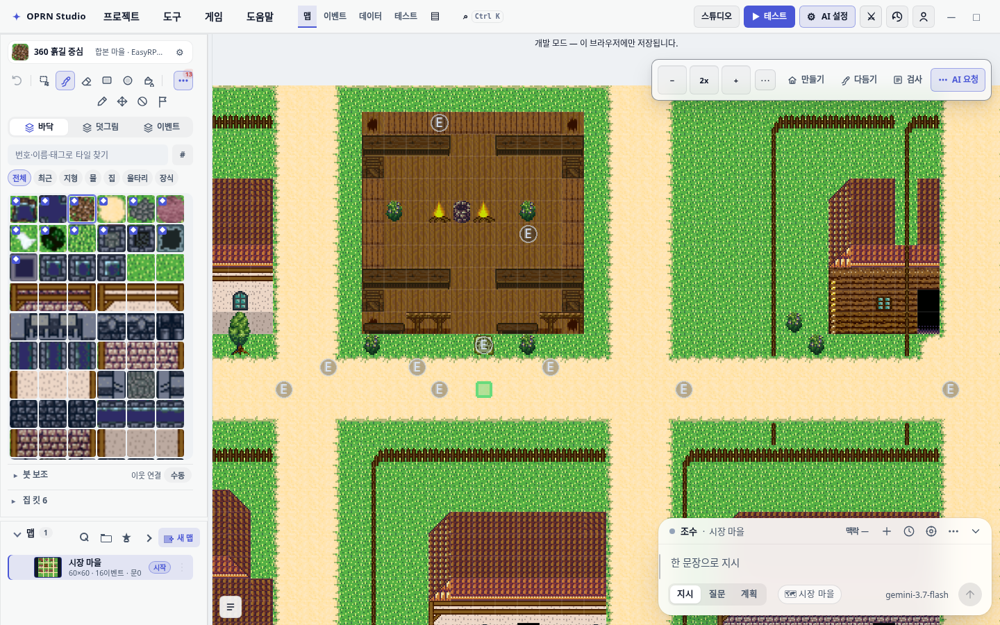
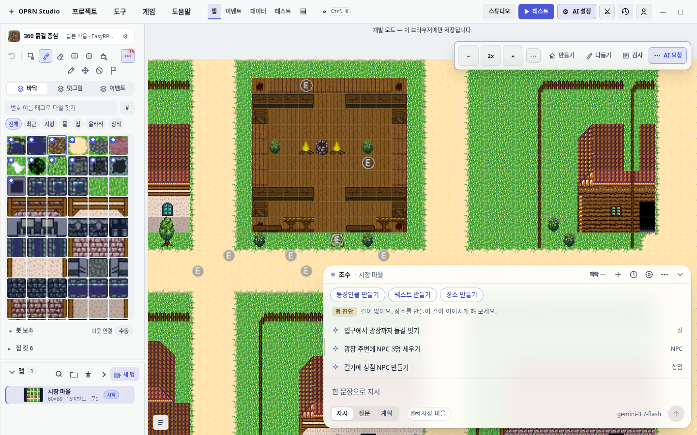
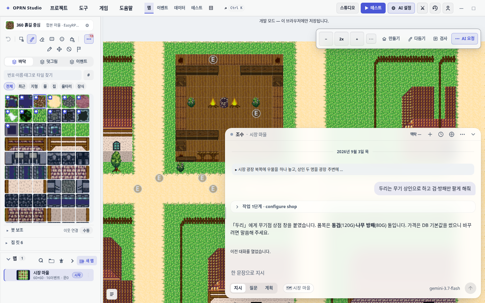
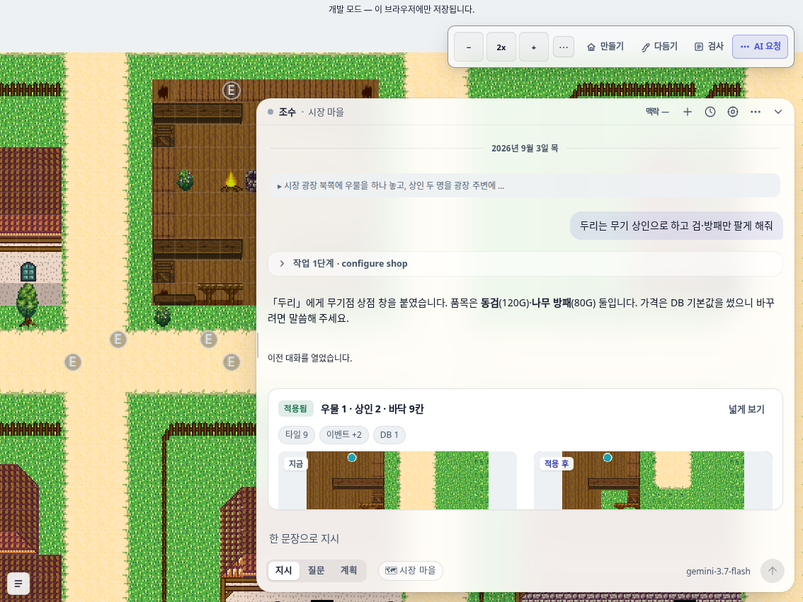
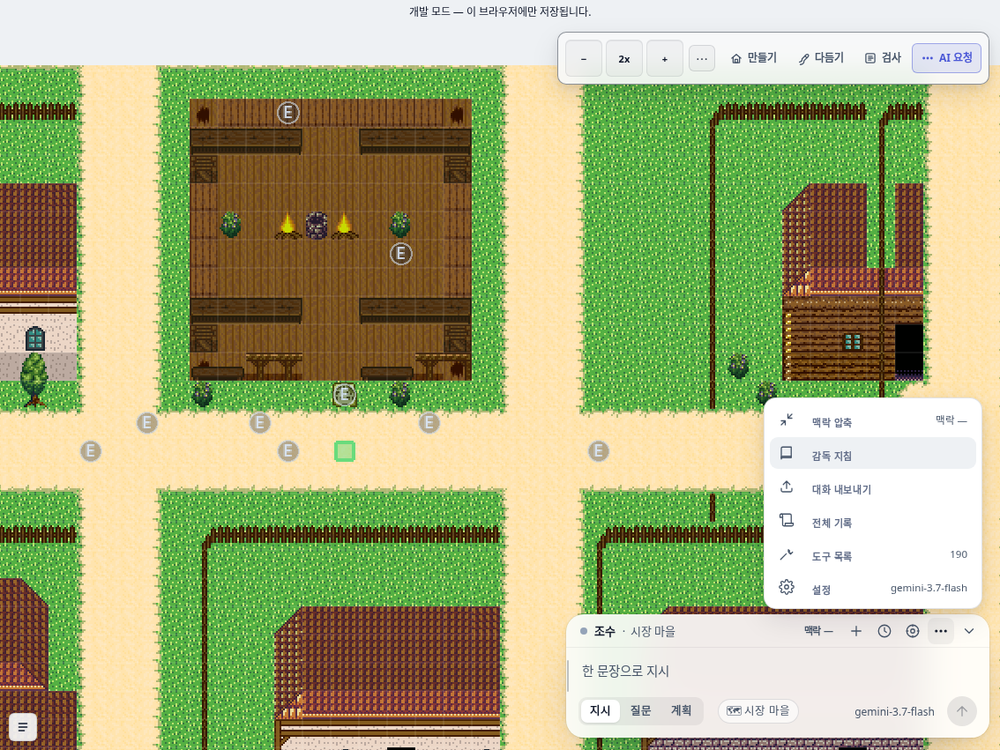
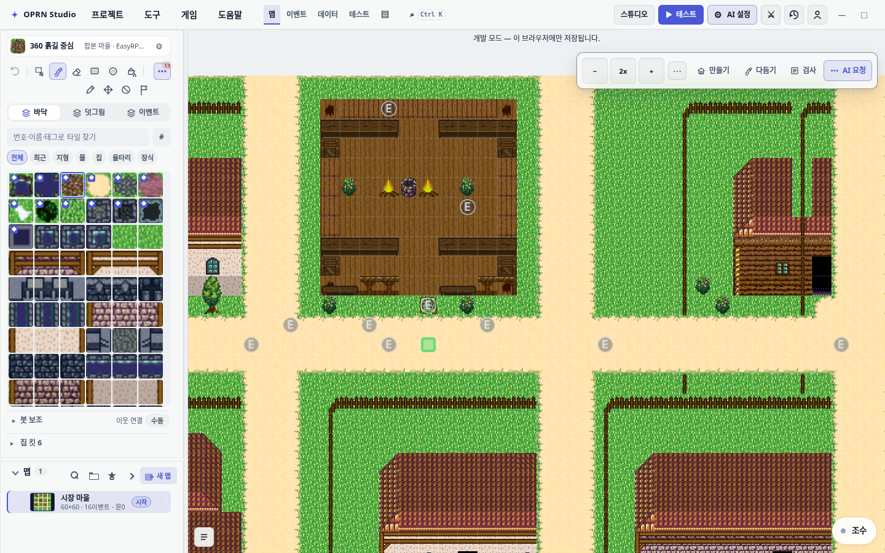
| 목업과 다른 점 | 이유 |
|---|---|
| 유휴에서도 레일이 보인다(목업은 컴포저만) | 버튼 한 벌을 두 자리에 둘 수 없다. 레일이 항상 있으면 진입점 위치가 상태와 무관하게 고정된다. |
| 「확인 필요」 영수증(이 맵에 넣기)이 없다 | 제안은 이미 자동 적용된다(aiProposalCard.applyProposal). 승인 카드는 코드에 없었고 「확인 필요」 상태는 질문 대기·접힘 중 알림에만 쓴다. |
| 계획 카드는 자율 런 체크리스트 재도장 | 실행 전 계획 승인 흐름은 데이터 층 변경이라 범위 밖(제안서 §08 「넣지 않은 것」). |
| 팝오버(⋯·성향·맥락)가 레일 위로 열린다 | 유휴 데크는 뷰포트 바닥에 붙은 110px 라 아래로 열면 잘린다(실측). |
| 맵 칩은 좌표가 있는 툴 행에만 | 인자/결과에 좌표가 없는 툴(설정·조회 일부)은 계열 아이콘 칩. |
증거: docs/2026-09-03-ai-assistant-modern-ui-assets/after/(캡처 21장 · contrast.json 유리면 대비), e2e assistant-single-dock · ai-panel-reachability(잘림 0 · 가로 밀림 0 · 본문 눌림 0) · assistant-change-preview, CSS 예산 새 파일 hex 0 · !important 0, 파일 수 265→263.